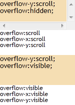

RV8003: IE 中同一条规则下的后定义的 overflow 特性值不会覆盖之前设定的 overflow-x 和 overflow-y 特性值
标准参考
根据 CSS2.1 规范中的描述，在某些情况下，一个框可能会溢出，换句话说，它的部分或者全部内容会出现在框的外部。
'overflow' 特性指定了当一个块级元素的内容溢出该元素盒子的时候是否剪裁，它应用在非替换的块级元素、单元格和行内块元素上。
'overflow' 特性取值有 'visible'、'hidden'、'scroll' 和 'auto'，默认值为 'visible'；当 'overflow' 取值为 'hidden' 时，元素将剪裁溢出的内容，并且不提供滚动条显示溢出内容；当 'overflow' 取值为 'scroll' 时，元素将剪裁溢出的内容，不管内容是否溢出均会提供滚动机制；当 'overflow' 取值为 'auto' 时，对于溢出的内容用户端应该提供一个滚动机制。
CSS3 basic box model 草案中增加了 'overflow-x' 与 'overflow-y' 特性，分别对应一个框的 X 轴 与 Y 轴方向，即 'overflow-x' 特性决定了左右边的剪裁情况，'overflow-y' 特性决定了上下边的剪裁情况。此时 'overflow' 特性则代表了 'overflow-x' 与 'overflow-y' 特性的简写，若 'overflow' 特性的值仅有一个关键字，则 'overflow-x' 与 'overflow-y' 特性值均为该值；若有两个关键则，则第一个赋给 'overflow-x'，第二个赋给 'overflow-y'。
关于 'overflow'、'overflow-x'、'overflow-y' 特性的更多信息，请参考 CSS2.1 规范 11.1.1 Overflow: the 'overflow' property 及 CSS3 草案 11.1. The ‘overflow’, ‘overflow-x’ and ‘overflow-y’ properties 中的内容。
问题描述
在 IE6 IE7 IE8 中，若在同一条规则中同时首先定义了 'overflow-x' 或 'overflow-y' 特性，然后又定义了 'overflow' 特性，则作为简写的 'overflow' 特性的值不会覆盖之前的 'overflow-x' 或 'overflow-y' 特性的值。
造成的影响
此问题可能使元素的 'overflow' 相关特性的计算值不同，从而导致元素的剪裁情况出现差异，如无法生成滚动条，溢出内容无法阅读。
受影响的浏览器
| IE6 IE7 IE8 |
|---|
问题分析
虽然 'overflow-x' 及 'overflow-y' 特性定义仍属于草案阶段，但目前所有主流浏览器均支持这两个 CSS3 中的新特性。且若为一个元素设定了 'overflow' 特性的值，则所有浏览器均会将其视作简写拆分为 'overflow-x' 及 'overflow-y'。
下面通过测试样例分析同一条 CSS 规则下 同时为元素设定 'overflow' 及 'overflow-x' 或1 'overflow-y' 特性后，这三个特性的计算值差异。
注 1: 同时设定 'overflow-x' 及 'overflow-y' 特性时，这两个特性的计算值在 IE 与其他浏览器之间存在差异，为了更清晰描述此问题，本文的测试样例将避免同时为元素设定 'overflow-x' 及 'overflow-y' 特性。关于这个计算值差异请参见 "相关问题"。
分析以下代码：overflow.html
<!DOCTYPE html>
<html>
<head>
<style>
body { margin:0; font:14px/1 'Trebuchet MS'; }
div.ov { width:150px; height:50px; background:wheat; }
div.info { font-size:12px; }
</style>
<script>
function $(id) { return document.getElementById(id); }
window.onload = function () {
if (!window.getComputedStyle) {
window.getComputedStyle = function ($target) {
return $target.currentStyle;
};
}
$('i1').innerHTML = 'overflow:' + getComputedStyle($('d1'), null).overflow + '<br />overflow-x:' +
getComputedStyle($('d1'), null).overflowX + '<br />overflow-y:' +
getComputedStyle($('d1'), null).overflowY;
$('i2').innerHTML = 'overflow:' + getComputedStyle($('d2'), null).overflow + '<br />overflow-x:' +
getComputedStyle($('d2'), null).overflowX + '<br />overflow-y:' +
getComputedStyle($('d2'), null).overflowY;
$('i3').innerHTML = 'overflow:' + getComputedStyle($('d3'), null).overflow + '<br />overflow-x:' +
getComputedStyle($('d3'), null).overflowX + '<br />overflow-y:' +
getComputedStyle($('d3'), null).overflowY;
$('i4').innerHTML = 'overflow:' + getComputedStyle($('d4'), null).overflow + '<br />overflow-x:' +
getComputedStyle($('d4'), null).overflowX + '<br />overflow-y:' +
getComputedStyle($('d4'), null).overflowY;
}
</script>
</head>
<body style="">
<div id="d1" class="ov" style="overflow:hidden; overflow-y:scroll;">overflow:hidden;<br />overflow-y:scroll;</div>
<div id="i1" class="info"></div>
<br />
<div id="d2" class="ov" style="overflow-y:scroll; overflow:hidden;">overflow-y:scroll;<br />overflow:hidden;</div>
<div id="i2" class="info"></div>
<br />
<div id="d3" class="ov" style="overflow:hidden; overflow-x:scroll;">overflow:hidden;<br />overflow-x:scroll;</div>
<div id="i3" class="info"></div>
<br />
<div id="d4" class="ov" style="overflow-x:scroll; overflow:hidden;">overflow-x:scroll;<br />overflow:hidden;</div>
<div id="i4" class="info"></div>
</body>
</html>
上面的代码分为四组，前两组测试同一条 CSS 规则下 'overflow' 特性与 'overflow-y' 特性同时设定时的情况，后两组测试同一条 CSS 规则下 'overflow' 特性与 'overflow-x' 特性同时设定时的情况。而第一组和第三组中 CSS 规则中的 'overflow' 特性定义位于 'overflow-x' 或 'overflow-y' 特性之前，第二组和第四组中 CSS 规则中的 'overflow' 特性定义位于 'overflow-x' 或 'overflow-y' 特性之后。最后获取四组元素的这三个特性的计算值。
各浏览器中表现如下：
| IE6 IE7 IE8 | Firefox Chrome Safari Opera |
|---|---|
 |
 |
可见对于位于同一条 CSS 规则中时，若 'overflow' 特性定义在 'overflow-x' 或 'overflow-y' 特性之前，各浏览器没有差异，之后定义的 'overflow-x' 或 'overflow-y' 特性的值覆盖了由简写的 'overflow' 特性指定的值。
差异出现在 'overflow' 特性定义在 'overflow-x' 或 'overflow-y' 特性之后的情况：
- 在 IE6 IE7 IE8 中，首先设定了 'overflow-x' 或 'overflow-y' 特性，之后设定的简写 'overflow' 未能覆盖之前设定的 'overflow-x' 或 'overflow-y' 特性，而得到的 'overflow' 特性的计算值也与实际设定值不符；
- 在 其他浏览器 中，首先设定了 'overflow-x' 或 'overflow-y' 特性，之后设定的简写 'overflow' 会覆盖之前设定的 'overflow-x' 或 'overflow-y' 特性。
以上测试仅限定在同一条 CSS 规则内的情况，下面测试当 'overflow' 及 'overflow-x' 或 'overflow-y' 特性不在同一条 CSS 规则中时的情况。
分析以下代码：overflow_2.html
<!DOCTYPE html>
<html>
<head>
<style>
body { margin:0; font:14px/1 'Trebuchet MS'; }
div.ov { overflow-y:hidden; }
div.ov { width:150px; height:60px; background:wheat; overflow:scroll; }
div.info { font-size:12px; }
</style>
<script>
function $(id) { return document.getElementById(id); }
window.onload = function () {
if (!window.getComputedStyle) {
window.getComputedStyle = function ($target) {
return $target.currentStyle;
};
}
$('i1').innerHTML = 'overflow:' + getComputedStyle($('d1'), null).overflow + '<br />overflow-x:' +
getComputedStyle($('d1'), null).overflowX + '<br />overflow-y:' +
getComputedStyle($('d1'), null).overflowY;
$('i2').innerHTML = 'overflow:' + getComputedStyle($('d2'), null).overflow + '<br />overflow-x:' +
getComputedStyle($('d2'), null).overflowX + '<br />overflow-y:' +
getComputedStyle($('d2'), null).overflowY;
}
</script>
</head>
<body>
<div id="d1" class="ov">overflow-y:hidden;<br />overflow:scroll;</div>
<div id="i1" class="info"></div>
<br />
<div id="d2" class="ov" style="overflow:visible;">overflow-y:scroll;<br />overflow:visible;</div>
<div id="i2" class="info"></div>
</body>
</html>
上面两组代码中，'overflow' 及 'overflow-x' 或 'overflow-y' 特性不再位于同一条 CSS 规则内，而是属于不同的规则。
各浏览器中表现如下：
| 所有浏览器1 |
|---|
|  |
可见，当 'overflow' 及 'overflow-x' 或 'overflow-y' 特性不在同一条 CSS 规则中时，各浏览器之间没有差异，之后设定的简写 'overflow' 会覆盖之前设定的 'overflow-x' 或 'overflow-y' 特性。
注 1: 这里忽略各浏览器对于生成滚动机制的细微差异，以及 Firefox 的滚动条消失的现象。
解决方案
根据实际需求尽可能同时设定明确的 'overflow-x' 以及 'overflow-y' 特性，或者直接使用简写的 'overflow'，避免在同一条 CSS 规则内在 'overflow-x' 或 'overflow-y' 特性之后再定义 'overflow' 特性。
参见
知识库
相关问题
- RV1001: IE 中当 'overflow-x' 或 'overflow-y' 的值被设置成非 'visible' 时，另一个特性的计算值为 'visible' 而非 'auto'
- BG2001: Firefox 中块级元素高度或宽度过小会导致滚动条消失
测试环境
| 操作系统版本: | Windows 7 Ultimate build 7600 |
|---|---|
| 浏览器版本: |
IE6 IE7 IE8 Firefox 3.6.10 Chrome 7.0.544.0 dev Safari 5.0.2 Opera 10.62 |
| 测试页面: | overflow.html overflow_2.html |
| 本文更新时间: | 2010-10-09 |
关键字
overflow hidden scroll auto visible css rule overflow-x overflow-y